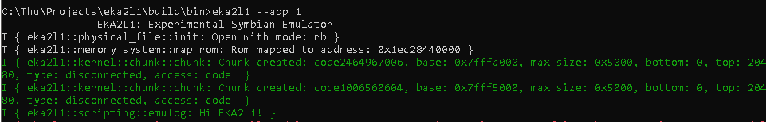
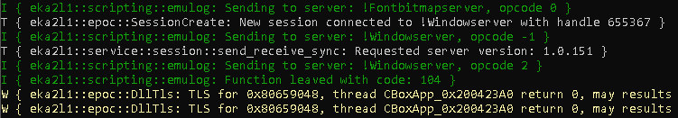

Scripting basic¶
Purpose
EKA2L1 provides scripting to help with emulator development. For example, the ability to hook and add debug code, inspects emulated memory, without having to write down the code in C++ and recompile it (which takes a lot of time).
Scripting has been used in EKA2L1 to debug leave codes, which are not exposed to kernel, reverse IPC calls behavior, and more. Additionally, you can use it for your own purpose, too! Which is what we gonna learn, now.
A simple script
We will start with a simple script, which will print to the emulator when running:
import symemu
def scriptEntry():
symemu.emulog('Hi EKA2L1!')
This scripts will redirect to the logger, making it display on both the console screen and in the log file. Log is extremely useful, it records runtime information for debugging and more stuffs like reverse engineering. So use emulog when possible.
So, now, what we got to do, is saving this as a Python script, and put it in the scripts folder, which is in the same directory as the executable (EKA2L1). And run.
You should see that the line Hi, EKA2L1! is logged to the screen, with the level Info.
scriptEntry is the function that EKA2L1 will first invoke, each time the emulator loads a new application. If this function doesn’t present in your script, nothing happens. You can use scriptEntry to initializes components of your script.
Hooking
EKA2L1 scripts can hook with a specific event. Many hooks can be added for a single event. There are four types of hook:
System call hook (
symemu2.events.emulatorSystemCallInvoke())This hook takes a single number, which is the ordinal of a system call. The hook will be invoked when the system call is also invoked.
There are two options to this hook:
Before system call starts doing its work.
After system call done its work.
Reschedule hook (
symemu2.events.emulatorRescheduleInvoke())Each time kernel reschedule happens, this hook is invoked.
Panic hook (
symemu2.events.emulatorPanicInvoke())Each time a thread is panic, this hook is invoked.
Library function hook (
symemu2.events.emulatorEpocFunctionInvoke())Each time a function in specified library, at the given ordinal index, is invoked, this function is also invoked.
Note: Only works with Unicorn JIT.
Breakpoint hook (
symemu2.events.emulatorBreakpointInvoke())Each time the specified address is reached in any thread, the hook is invoked.
Note: Only works with Unicorn JIT.
EKA2L1 makes use of a Python feature, named Decorator, to implement hooks. Here is an example, that will get the leaves code for you:
import ctypes
import symemu
import symemu2.events
## What is this leave invoke ?
##
## Leave is not supposed to panic, it's a way to tell parent function that
## there is an error occur with it, and all jobs and resources must immidiately
## be freed. The leave will combine with the cleanup stack and trap handler,
## create a powerful exception handling with stack and heap object.
##
## Because of that, we don't know what the code of the leave resulted, only
## the parent function know it. This is a hook to get the leave code, for debugging
## and reversing an app/game or a mechanism.
@symemu2.events.emulatorEpocFunctionInvoke("euser", 649)
def leaveHook():
# r0, when begging the function, contains the leave code. User is a static class
# Since the code is uint32 from C, it must be converted to signed for the leave code
# to be visible
leaveCode = ctypes.c_long(symemu.Cpu.getReg(0)).value
symemu.emulog('Function leaved with code: {}', leaveCode)
Symbian library object has function exported, each export function has a number attached to it, called ordinal. Here, the User::Leave function, has the ordinal of 649, and in the library euser. The rest of the code has been explained by comment.
Here is the script in action, at some random place:
For other hooks, it works the same. Understand decorators should let you master at scripting.
You can visit more basic examples on Github.